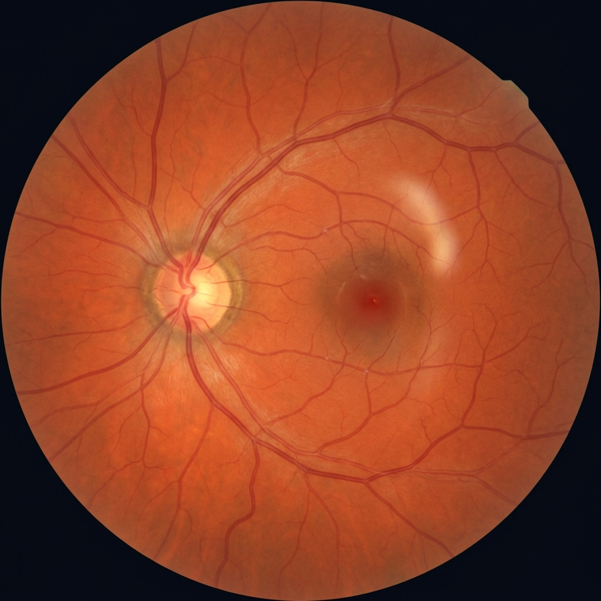
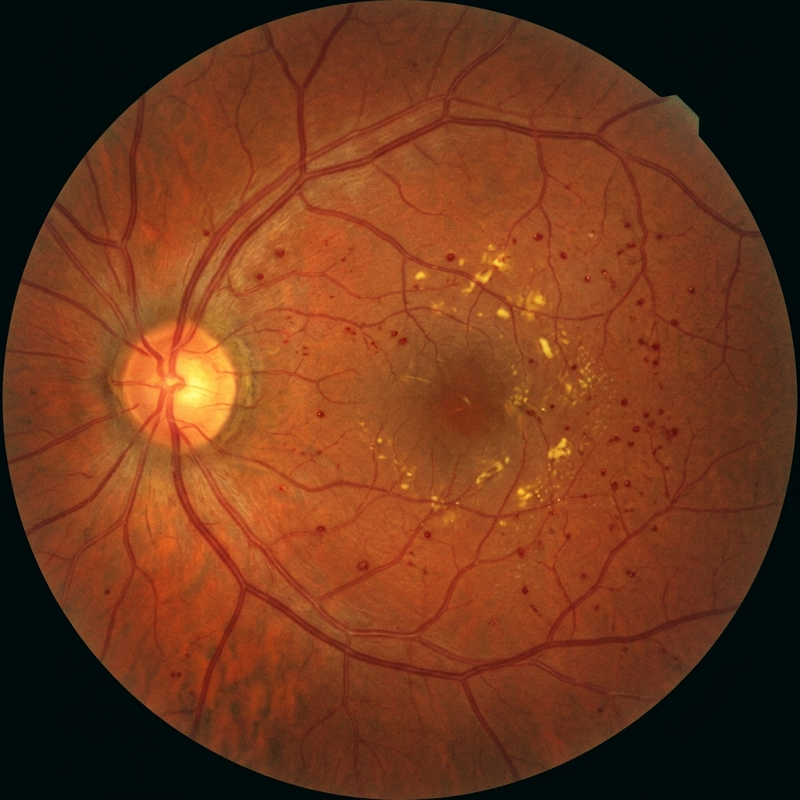
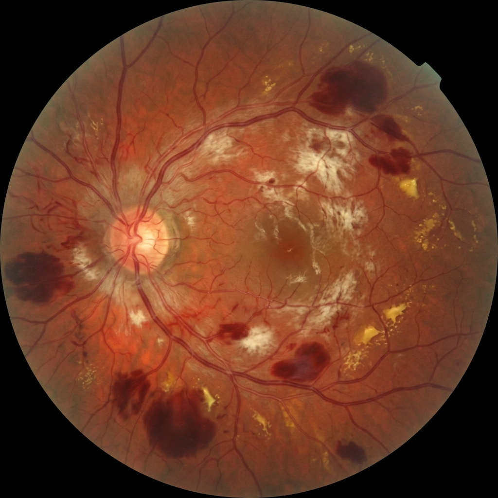
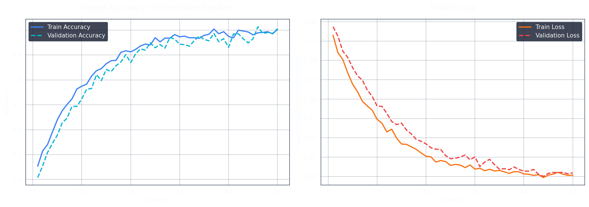
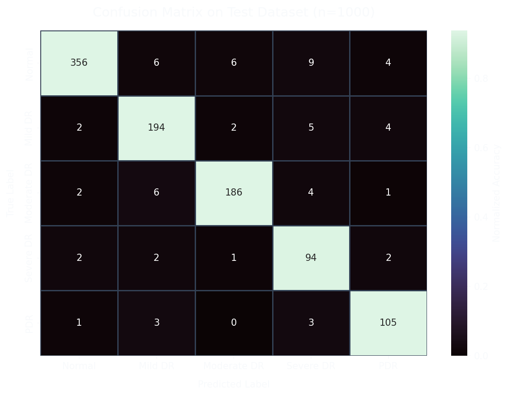
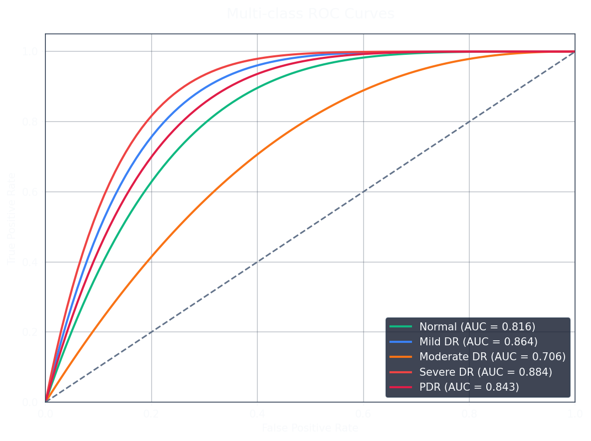

Hybrid EfficientNetB4 + ResNet-50 architecture with Grad-CAM explainability, optimized for large-scale deployment in rural India.
Select a retinal fundus image captured from a portable low-cost camera. The system processes these images securely from remote primary health centers.



Automated pre-screening check. Images failing these criteria are instantly flagged for recapture, preventing inaccurate AI diagnoses.
Preprocessing pipeline normalizes lighting variations across different camera hardware and enhances subtle lesions using CLAHE.
Computer vision and U-Net models isolate anatomical structures and pathological lesions to provide contextual data for the final report.
The fused feature vectors from EfficientNetB4 and ResNet-50 are processed through fully connected layers with Temperature Scaling for calibrated confidence.
Gradient-weighted Class Activation Mapping provides visual evidence for the model's decision, allowing ophthalmologists to quickly verify findings.
Comprehensive evaluation metrics of the hybrid EfficientNet-ResNet architecture across the validation dataset.



Structured, standardized report ready for final ophthalmologist review. Sent automatically via the telemedicine network.
Generated by RetinaAI Pro • Clinician Review Pending
Dynamic modeling of the telemedicine network queue dynamics, bandwidth constraints, and edge-processing throughput to optimize resource allocation.